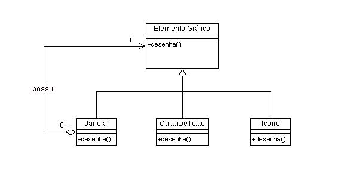

GoFs Estruturais
Histórico de revisões
| Data | Versão | Descrição | Autor |
|---|---|---|---|
| 21/10/2020 | 1.0 | Criação da página | Arthur Rodrigues |
| 22/10/2020 | 1.1 | Adição de conteúdo | Arthur Rodrigues e Marco Antônio |
| 24/10/2020 | 1.2 | Adicionando Exemplo de utilização do Proxy | Arthur Rodrigues |
| 24/10/2020 | 1.3 | Adicionando Conceitos dos padrões Bridge e Flyweight | Arthur Rodrigues |
| 24/10/2020 | 1.4 | Adicionando Conceitos sobre padrões de projeto estruturais | Arthur Rodrigues |
| 24/10/2020 | 1.5 | Adicionando Conceitos dos padrões Decorator, Composite e Adapter | Marco Antônio |
| 26/10/2020 | 1.6 | Revisão da primeira versão | João Gabriel Antunes |
| 10/11/2020 | 1.7 | Adicionando links que contém a implementação do padrão Proxy | Arthur Rodrigues |
1. Introdução
Os padrões estruturais se preocupam com a forma como classes e objetos são compostos para formar estruturas maiores. Os padrões estruturais de classes utilizam a herança para compor interfaces ou implementações. Dando um exemplo simples, considere como a herança múltipla mistura duas ou mais classes em uma outra. O resultado é uma classe que combina as propriedades das suas classes ancestrais. Esse padrão é particularmente útil para fazer bibliotecas de classes desenvolvidas independente- mente trabalharem juntas.
2. Objetivo
Em lugar de compor interfaces ou implementações, os padrões estruturais de objetos descrevem maneiras de compor objetos para obter novas funcionalidades. A flexibilidade obtida pela composição de objetos provém da capacidade de mudar a composição em tempo de execução, o que é impossível com a composição estática de classes.
3. GoFs Estruturais
3.1 Facade
O Padrão Facade que é simples de ser aplicado e que traz grandes benefícios aos projetos é dito como sendo um padrão estrutural e está entre os 23 padrões de projeto do GoF (Gang of Four).
Entende-se por padrão estrutural todo padrão de projeto que trata da associação entre classes e objetos.
Como o nome sugere Facade, é realmente uma fachada, podemos fazer a seguinte analogia, quando caminhamos em frente a um prédio com uma bela fachada, vemos as belas janelas as paredes bem decoradas, ou seja um ambiente bem amigável, e ignoramos toda a complexidade por trás da obra, a quantidade de salas, todas as empresas que estão neste prédio, deste modo o Facade também age nos projetos de software, dentre seus benefícios, alguns são:
- Reduz a complexidade de uma api, liberando acesso a métodos de alto nível encapsulando os demais.
- Produz uma interface comum e simplificada.
- Pode encapsular uma ou mais interfaces mal projetadas em uma mais concisa.
- Reduz drasticamente o acoplamento entre as camadas do projeto.
3.1.1 Estrutura

3.1.2 Benefícios
Pudemos perceber com a aplicação do Padrão Facade não importa quantas classes tenhamos na visualização ou no negócio, elas sempre irão interagir por um único caminho, mantendo a arquitetura coerente bom baixo acoplamento e com alta manutenabilidade.
Sua aplicação nos projetos já existentes não é de grande complexidade, por isso foi o escolhido para ser o primeiro padrão apresentado.
3.1.3 Aplicabilidade
- Diminuir o acoplamento entre camadas.
- Esconder a complexidade de 03 objetos de negócio para inserir um único cliente.
- Tornar o código mais manutenível na medida em que as classes de visualização e negócio forem aumentando em quantidade.
3.1.4 Implementação no Pomo
É possível aplicar o padrão Facade na parte de API do sistema .
3.2 Proxy
Proxy é um padrão de design estrutural que permite fornecer um substituto ou espaço reservado para outro objeto. Um proxy controla o acesso ao objeto original, permitindo que você execute algo antes ou depois que a solicitação chega ao objeto original. [2]
3.2.1 Estrutura

3.2.2 Benefícios
Se você precisar executar algo antes ou depois da lógica primária da classe, o proxy permitirá fazer isso sem alterar essa classe. Como o proxy implementa a mesma interface que a classe original, ele pode ser passado para qualquer cliente que espera um objeto de serviço real.
Entre outros:
-
Permite deixar transparente o local (endereço) do objeto real. O cliente não precisa conhecer se o objeto é remoto ou não, este tipo de proxy é conhecido como Remote Proxy.
-
Útil para realizar otimizações, como cache de objetos. Também pode ser implementado rotinas de logs e controle de acesso (segurança). Este tipo de proxy é conhecido como Virtual Proxy.
3.2.3 Aplicabilidade
O padrão Proxy sugere que você crie uma nova classe de proxy com a mesma interface que um objeto de serviço original. Em seguida, você atualiza seu aplicativo para que ele transmita o objeto proxy para todos os clientes do objeto original. Ao receber uma solicitação de um cliente, o proxy cria um objeto de serviço real e delega todo o trabalho para ele.
3.2.4 Implementação no Pomo
Abaixo segue o link para acesso do arquivo routes.js, que é onde o padrão está implementado
Link para o padrão proxy aplicado no arquivo routes.js
Imagem do padrão proxy sendo aplicado:
Como podemos ver no arquivo routes.js o padrão Proxy é utilizado. Antes de acessar os endpoints, um middleware é acionado para verificar se quem processou a solicitação tem autenticação suficiente. Os middlewares fazem o papel de proxy.
3.3 Bridge
O padrão Bridge é mais um dos vinte e três padrões descritos no livro “Design Patterns: Elements of Reusable Object-Oriented Software“ e é muito utilizado quando se deseja separar abstração de implementação justamente porque lida diretamente com a estrutura com que as interfaces e classes são elaboradas. Essa característica peculiar o elevou a ser considerado como um padrão estrutural e tornou possível sua aplicação em pontes de conexão com Banco de Dados
3.3.1 Estrutura
3.3.2 Benefícios
As características que tornam o padrão Bridge interessante envolvem: a capacidade de evitar uma ligação permanente entre uma abstração e a implementação, a propriedade de permitir a extensão de uma abstração, a proteção dos clientes com relação as alterações de implementação, a capacidade de esconder completamente a implementação do cliente, melhoria na gestão de um conjunto grande de hierarquias e extensões de uma abstração.
3.3.3 Aplicabilidade
A Abstração nesse modelo nada mais é do que a interface que o cliente usa para interagir com a abstração do mundo real e que é implementada pela Abstração Concreta. Nessa abstração concreta é mantido uma referência a uma interface de um Implementador e é exatamente o que torna possível desacoplar a abstração da implementação porque agora a abstração faz referências a um ou mais métodos da classe implementador.
3.3.4 Implementação no Pomo
Até o presente momento, não foi necessária a implementação do padrão Bridge.
3.4 FlyWeight
O Flyweight é um padrão de design estrutural que permite ajustar mais objetos à quantidade disponível de RAM, compartilhando partes comuns do estado entre vários objetos, em vez de manter todos os dados em cada objeto.
3.4.1 Estrutura

3.4.2 Benefícios
Você pode economizar muita memória RAM, assumindo que seu programa tenha vários objetos semelhantes.
3.4.3 Aplicabilidade
Projetar objetos até os níveis mais baixos de “granularidade” do sistema fornece flexibilidade ideal, mas pode ser inaceitavelmente caro em termos de desempenho e uso de memória.
3.4.4 Implementação no Pomo
Até o presente momento, não foi necessária a implementação do padrão Flyweight.
3.5 Decorator
O Padrão Decorator anexa responsabilidades adicionais a um objeto dinamicamente. Os decoradores fornecem uma alternativa flexível de subclasse para estender a funcionalidade.
3.5.1 Estrutura
3.5.2 Benefícios
O Decorator resolve problemas que a herança gera em determinados momentos, diminuindo drasticamente as classes geradas e permitindo flexibilidade aos atributos e métodos. Esta solução traz ao projeto uma flexibilidade maior, em que pode se adicionar ou remover responsabilidades sem que seja necessário editar o código-fonte, alta coesão e fraco acoplamento.
3.5.3 Aplicabilidade
Acrescentar ou remover responsabilidades a objetos individuais dinamicamente, de forma transparente, evitando a explosão de subclasses para prover todas as combinações de responsabilidades.
3.5.4 Implementação no Pomo
O padrão decorator sera implementado no projeto aproveitando o modelo das tarefas, tendo em vista que uma tarefa terá vários campos não obrigatórios, que o usuário conseguirá editar a qualquer momento, adicionando ou removendo informações de uma tarefa. Para isso acontecer sera utilizado o decorator, de forma que facilite a edição dinâmicamente.
3.6 Composite
Entende-se por Composite um padrão de projeto de software utilizado para representar um objeto formado pela composição de objetos similares. Este conjunto de objetos pressupõe uma mesma hierarquia de classes a que ele pertence. Tal padrão é, normalmente, utilizado para representar listas recorrentes - ou recursivas - de elementos. Além disso, este modo de representação hierárquica de classes permite que os elementos contidos em um objeto composto sejam tratados como se fossem um objeto único. Desta forma, os métodos comuns às classes podem ser aplicados, também, ao conjunto agrupado no objeto composto.
3.6.1 Estrutura

3.6.3 Aplicabilidade
A intenção do padrão Composite é compor objetos em estruturas de árvore para representar hierarquia partes-todo.
3.6.4 Implementação no Pomo
Até o presente momento, não foi necessária a implementação do padrão Composite.
3.7 Adapter
O padrão Adapter converte a interface de uma classe para outra interface que o cliente espera encontrar, "traduzindo" solicitações do formato requerido pelo usuário para o formato compatível com o a classe adaptee e as redirecionando. Dessa forma, o Adaptador permite que classes com interfaces incompatíveis trabalhem juntas.
3.7.1 Estrutura

3.7.2 Benefícios
É criado uma interface de modo que não seja necessario refazer toda uma estrutura ja existente, para fazer uma atualização.
3.7.3 Aplicabilidade
O adapter é usado quando se deseja utilizar uma classe existente, porém sua interface não corresponde à interface que se necessita, quando o desenvolvedor quiser criar classes reutilizáveis que cooperem com classes não-relacionadas ou não-previstas, ou seja, classes que não possuem necessariamente interfaces compatíveis.
3.7.4 Implementação no Pomo
Até o presente momento, não foi necessária a implementação do padrão Adapter.
4. Referências
Fábio, 2009. Devmedia. Disponível em: https://www.devmedia.com.br/o-padrao-facade-aplicado/12683. Acesso em: 23/10/2020.
ROBERTO, Jones. Design Patterns -- Parte 14 -- Proxy. Medium. 03 Dezembro, 2019. Disponível em: https://medium.com/xp-inc/design-patterns-parte-14-proxy-9f72c15a2ee1. Acesso em: 23/10/2020.
PIERIN, Felipe. Explorando os benefícios do uso do Design Pattern Bridge. 02 Agosto, 2011. Disponível em: https://fpierin.wordpress.com/2011/08/02/explorando-os-beneficios-do-uso-do-design-pattern-bridge/. Acesso em: 24/10/2020.
ROBERTO, Jones. Design Patterns -- Parte 13 -- Flyweight. Medium. 28 Novembro, 2019. Disponível em: https://medium.com/xp-inc/design-patterns-parte-13-flyweight-9f96433bce05. Acesso em: 24/10/2020.
GAMMA, Erich; HELM, Richard; JOHNSON, Ralph; VLISSIDES, JOHN. Padrões de Projeto. Bookman, 2000.
Serrano, Milene. 2020. Aula GoFs Estruturais. Acesso em 21/10/2020.